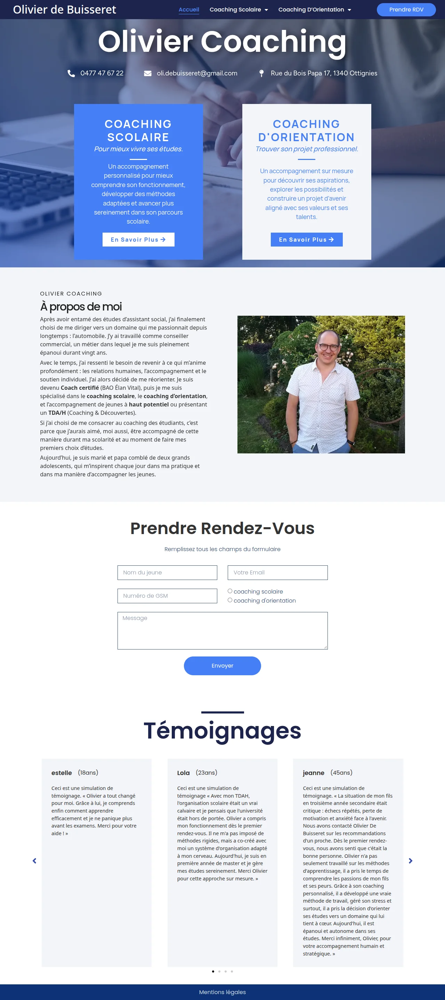
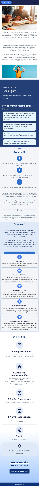

Web Design and Wordpress development
Olivier Coaching



RoleWeb design & front-end development
ToolsWordpress, Elementor, Figma
YearAugust 2026
ClientOlivier de Buisseret
Web Design and Wordpress development


Olivier Coaching is a website for Olivier de Buisseret, a school and career coach in Ottignies (Belgium) who helps students study with less stress and find their direction. The site had to convey trust and professionalism while staying friendly and easy to approach for students who are struggling at school as well as for their parents. The client also asked for a testimonials section and a contact form, and he provided all the text himself, to be used almost word for word.
Created for a school project, it was an exercise in WordPress, Elementor and extensions, but for a real client who needed a new visual identity. I designed and built a three-page site: a home page and one page for each coaching service.
Blue was chosen for what it stands for in education: trust, calm and pedagogy. The site alternates between two tones. Dark blue brings a professional, “I know what I’m talking about” feel, while light blue is softer and reassuring for the more personal sections. Rounded shapes on the cards, buttons and images add a friendly, welcoming touch, so the site feels serious without being intimidating for young visitors.
Only one font is used, Manrope, to keep the site simple, consistent and clean. Instead of mixing typefaces, the hierarchy comes from font weight alone: bolder weights for titles and key information, lighter ones for body text. Its open, modern shapes are easy to read for teenagers and parents, and the single family keeps the pages calm and uncluttered, which suits a service about reducing stress.
All the text came from the client and had to stay almost unchanged, so the real challenge was layout: Making large chunks of text easy to read. I broke the contents into bullet points, icon cards, split them into short sections and used accordions to limit the space and make the site more interactive. This gives every page a clearer structure and lets visitors scan quickly and land on the details they need.
ABCDEFGHIJKLMNOPQRSTUVWXYZabcdefghijklmnopqrstuvwxyz0123456789
Display type for headlines — bold, playful, a little handmade.
ABCDEFGHIJKLMNOPQRSTUVWXYZabcdefghijklmnopqrstuvwxyz0123456789
Body copy — clean and easy to read at small sizes.
No Ai was used on this project.